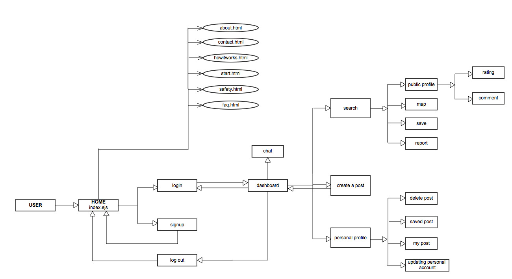
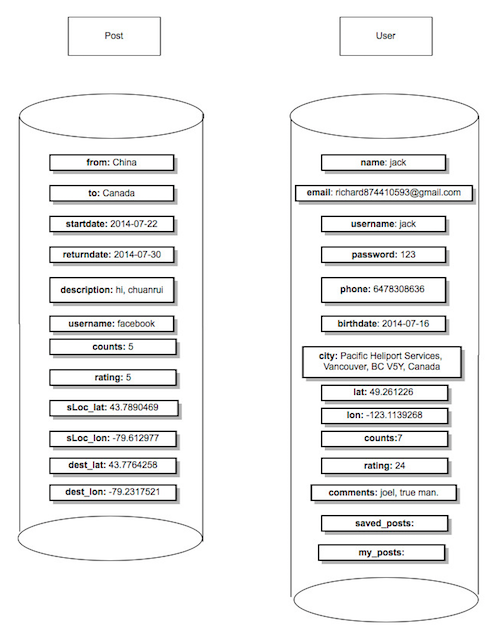

How to view our site.
CarNex is a unique web service that allows people to connect and facilitate carpooling. Below is a brief description of the site.
Homepage: The CarNex home page is the starting point for the user. From this page the user can learn more about the CarNex program through several links on the home page. The user can also either sign up to set up a CarNex account or can log in to an existing account.
Signup page: A new user can click the sign up button from the homepage and it will navigate them to the signup page. The user then puts in the personal information needed to create an account and can select a username and enter a password. This information is stored in the user collection of the database. After creating an account, the user will be redirected back to the homepage and can log in.
Login function: From the homepage the user can click the Log In
button and put in their username and password then hits go. If the the username and password are authenticate, this action sends the user to their dashboard. This also creates a new session for the user in the database. If the username and password are not authenticated the user will be sent back to the homepage again.
Log out function: Once at the dashboard page, the user can click the Logout
button, to logout of their account. This removes the user's current session from the database. This is the only way to end the current session. Even when a user closes a window without logging out, the session is still active.
Dashboard: The dashboard page is displayed after login, greeting the user by their username. From the dashboard it is possible to Search existing postings, by typing a desired origin/destination.
Additionally, the user can View profile which directs them to their own personal profile page. They can also Create a post
, create a new posting of their departure/arrival information and a short description for other users to view.
Search: From the dashboard page, the user can search for postings of the route they intend to travel by putting in an origin and a destination. This lists all the different posts for that specific route and the user can browse the results. The user has several possible actions related to each post.
1). Profile: This button navigates to the public profile of the user who created the post. The user can view the poster's basic information, average ratings and comments left by other users. As well, a map displays the poster's home city. From this page the user should also be able to use CarNex's builtin chat function to chat with the poster if they are online, to arrange the details of the trip.
2). Map: Using Google mapping API, this function plots the possible route to take for the trip.
3). Save: This function helps the user save different postings that they are interested in for future reference. The saved posting are viewable from the user's own personal profile page. Any user who saves a post can later unsave it whenever they want.
4). Report: This function when clicked, sends a message to the CarNex website administrator that the posting is improper and should be taking down.
Personal profile: This enables the user to view their own profile. From this page the user can view saved posts which they are interested in and plan to follow up. They can also unsave posts at any time. This page also displays the user's own posts and allows the user to delete their own posts at anytime. A user can also view their own overall rating given by other users.
Create a post: In the create a post page the user will put necessary information that will be beneficial to other users searching for the same route. The information will be stored in the database and can be viewed by all users when they perform a search. After submitting the post it redirects back to the dashboard.
Public profile:
Every user has a public profile which other users can view when they click their post from a search result. Whenever users perform search for a particular location and gets a result, the user can click the profile button on the post and it navigates to the poster's profile. A user can view the map of the city where poster resides and usually travels from.
On the public profile page you have the option to:
1). Chat with poster:
Currently the chat function works as a ticker feed chat room to allow users to communicate with each other and receive instant notification of other users seeking to travel.This allows users to communicate directly with each other allowing them to correspond to quickly form travel plans. As CarNex expands, we'd hope to refine the chat system so that whenever a user visits a poster's public profile page there is a chat option which sends the poster a private message.
2). Rate another user:
On a public profile page there is a rating option to rate their experience with that user. The option is great because others who visit this user's public profile will see the average rating of the user.
3). Comment on another user:
Similar to the rating system, on a public profile there is a comment box which the user can leave a feedback(both positive and negative) for other users to see about their experience.
4). Report the user:
On the public profile page, a user can be reported to the CarNex administrators. This is usually done when they see an inappropriate post, or have a very bad experience dealing with this user.
Sample users:
username: Jason
password: 123
Sample post:
origin: Toronto
destination: Ottawa
Sample post:
origin: Brantford
destination: Montreal
The CarNex web service has several key design decisions that emphasise its usefulness and effectiveness as a tool for carpoolers. It can be used with ease on mobile devices because it is very responsive and may change its layout with respect to the browsers size adjustment. In order to integrate our front end design with the back end we coded our pages in an embedded java script format (ejs). This allows us to use the html documents created for the first milestone and add in the javacript components needed to integrate dynamic web pages into the site. The backend of the CarNex site is built using Node.js and Express.js frameworks and stores its database in MongoLab, a MongoDB cloud hosting service. The database collections are described in detail below as well as a brief outline of several design decisions that we made.
Database: The database is comprised of 2 collections one describing the data from the posts and another describing the the information associated with each user. Each user entry has an array containing the posts that they created and an array with posts they have saved.
Dashboard:
Index:
Profile:
Improvements progress:
We got 4 feedbacks from assignment 1 on some issues and we addressed them in this assignment.
| User Story | Story Points |
|---|---|
| As a user, I want to be able to easily view announcements about the service. | 1 |
| As a user, I want to be able to search for a particular route. | 3 |
| As a user, I want to be able to sort results of my search to easily view the postings that are most relevant to my needs. | 5 |
| As a user, I want to be able to contact a driver directly to negotiate a price and make arrangements for a trip. | 2 |
| Moderation of driver ads. | 3 |
| As a user, I want to see other users' ratings and reviews for a particular driver. | 3 |
| As a user, I want to be able to send feedback to the site owners. | 2 |
| As a driver, I want to be able to post an ad for a particular route I am taking. | 5 |
| As a user, I want my safety to be taken seriously. | 5 |
| As a user, I want to be able to rate my experience with a particular driver. | 5 |
| As a user, I want the website to be easy to navigate. | 7 |
| As a driver, I want to be able to edit or delete my own posting. | 3 |
| As a user, I want to be able to chat with other users on the site. | 5 |
| Task | Hours Planned |
|---|---|
| Intuitive navigation | 2 |
| Styling for the entire website | 3 |
| About Us | 2 |
| Homepage - clearly communicate project idea | 5 |
| How it Works (FAQ) | 4 |
| Sign up page | 2 |
| Log in dialog | 1 |
| Sample postings page | 4 |
| Contact Us form | 2 |
| Account settings | 5 |
| Compatibility across browsers and devices | 3 |
| W3 validation | 1 |
| Readme | 1 |
| Task | Hours Planned | Team Member Assigned | Deadline Date | Hours Taken | Team Member Completed | Completed date |
|---|---|---|---|---|---|---|
| User sign-up | 2 | Monica | July 14 | 6 | Joel and Richard | July 14 |
| User login | 1 | Monica | July 16 | 4 | Joel and Richard | July 16 |
| Change user settings | - | Monica | July 19 | 3 | Joel | July 19 |
| Posting an ad | 3 | Joel | July 15 | 4 | Joel | July 15 |
| Deleting/Unsaving ads | 2 | Joel | July 17 | 6 | Joel | July 17 |
| Saving ads | - | Joel | July 7 | 4 | Joel | July 17 |
| Admin moderation of posts | 2 | *moved to sprint 3 | - | - | - | - |
| Searching posts for a particular route | 4 | Joel and Richard | July 15 | 8 | Joel and Richard | July 15 |
| Sorting of search results | 3 | Joel and Richard | July 15 | 2 | Joel and Richard | July 15 |
| View profile | - | Joel and Richard | July 17 | 5 | Joel and Richard | July 17 |
| Mapping routes | - | Monica | July 18 | 8 | Richard | July 18 |
| Implement the Contact Us form | 3 | Chidi | July 14 | 3 | Joel and Chidi | July 25 |
| Allow users to contact each other | 5 | Richard | July 21 | 10 | Richard | July 24 |
| Allow users to submit ratings and reviews | 5 | Joel and Richard | July 17 | 8 | Joel and Richard | July 21 |
| Viewing ratings and reviews | 2 | Chidi | July 17 | 2 | Chidi | July 21 |
| Readme | 1 | - | July 25 | 3 | Chidi | July 25 |
| Improvements | - | - | July 14 | 3 | Chidi | July 14 |
| Task | Hours |
|---|---|
| Patch security vulnerabilities | 10 |
| Load/stress testing and improvement | 10 |
| Report on security/scaling | 5 |
| Readme | 1 |
Some things that is left for A3:
Reference: